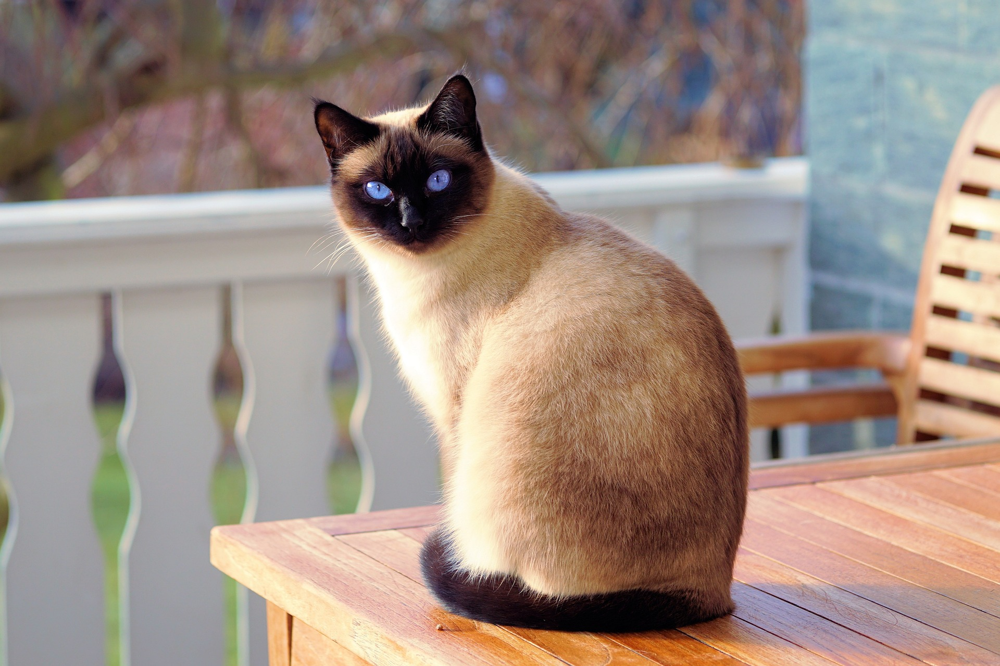
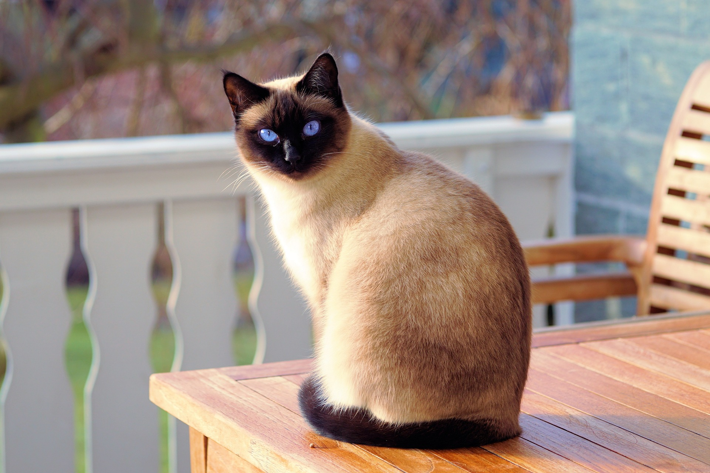

Informacje
Jest to strona poświęcona kotom. Znajdziesz tu wiele ciekawych rzeczy.
Najpopularniejsze rasy kotów w Polsce
| Rasa | Kraj pochodzenia |
|---|---|
| Kot europejski | Europa, Szwecja, Finlandia |
| Kot brytyjski | Wielka Brytania |
| Maine Coon | Maine, Stany Zjednoczone |
| Kot perski | Iran, Afganistan |
| Kot rosyjski niebieski | Archangielsk |
| Kot syjamski | Tajlandia |
| Kot norweski leśny | Norwegia |
| Kot syberyjski | Rosja |
| Sfinks | Toronto |
| Ragdoll | Riverside |
Ciekawostki
- Koty nie mają obojczyków. Dzięki temu są w stanie przeciskać się nawet przez ciasne szczeliny.
- U kotów szczęka nie porusza się na boki. Nie są one więc w stanie przeżuwać kęsów pokarmu.
- Koty chodzą jak wielbłądy i żyrafy. Najpierw poruszają obiema prawymi łapami, a następnie obiema lewymi.
- Koci ogon stanowi niezawodną pomoc w utrzymaniu równowagi podczas wspinaczek i balansowania po cienkich gałązkach.
- Koci język wyposażony jest w keratynowe haczyki, które są bardzo pomocne przy czyszczeniu sierści oraz oddzielaniu mięsa od kości.
- Wzór na nosie kota jest cechą indywidualną, podobnie jak linie papilarne człowieka.
- Kot może poruszać każdym uchem niezależnie od siebie i obrócić każde z nich o 180 stopni. Domowe koty mają aż 32 mięśnie kontrolujące ruchy ucha zewnętrznego.
- Koty dysponują bardzo szerokim repertuarem odgłosów. Potrafią wydawać aż 100 różnych dźwięków.
- W starożytnym Egipcie koty otoczone były szczególną czcią. Egipcjanie uważali je za wcielenie bogini Bastet. Wierzyli więc, że koty mogą bronić ludzi przed wpływem złych duchów. Zabijanie kotów było zakazane prawem.
- Koty uczą się w podobny sposób jak 2-3-letnie dzieci.
Galeria


 
